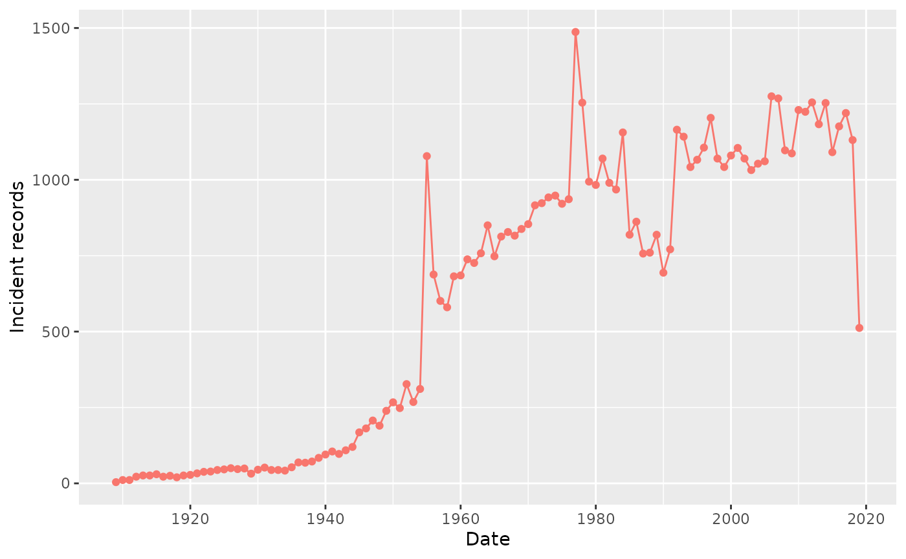
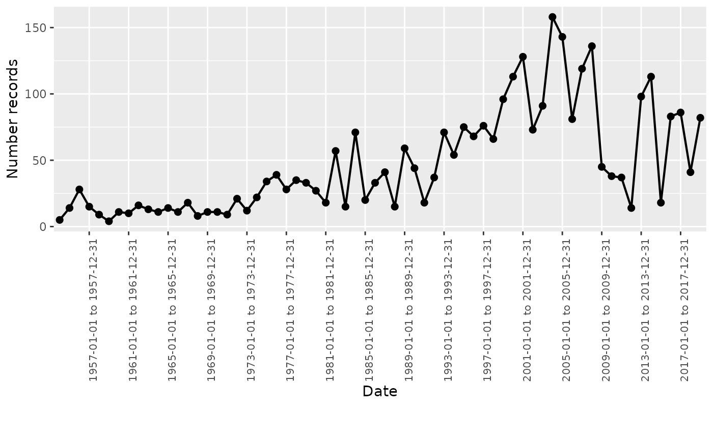

Summarise clinical tables records
Source:vignettes/A-summarise_clinical_tables_records.Rmd
A-summarise_clinical_tables_records.RmdIntroduction
In this vignette, we will explore the OmopSketch functions designed to provide an overview of the clinical tables within a CDM object (observation_period, visit_occurrence, condition_occurrence, drug_exposure, procedure_occurrence, device_exposure, measurement, observation, and death). Specifically, there are four key functions that facilitate this:
summariseClinicalRecords()andtableClinicalRecords(): Use them to create a summary statistics with key basic information of the clinical table (e.g., number fo records, number of concepts mapped, etc.)summariseRecordCount()andplotRecordCount(): Use them to summarise the number of records within a specific time interval.
Create a mock cdm
Let’s see an example of its funcionalities. To start with, we will load essential packages and create a mock cdm using Eunomia database.
library(dplyr)
#>
#> Attaching package: 'dplyr'
#> The following objects are masked from 'package:stats':
#>
#> filter, lag
#> The following objects are masked from 'package:base':
#>
#> intersect, setdiff, setequal, union
library(CDMConnector)
library(DBI)
library(duckdb)
library(OmopSketch)
# Connect to Eunomia database
con <- DBI::dbConnect(duckdb::duckdb(), CDMConnector::eunomia_dir())
cdm <- CDMConnector::cdmFromCon(
con = con, cdmSchema = "main", writeSchema = "main"
)
#> Note: method with signature 'DBIConnection#Id' chosen for function 'dbExistsTable',
#> target signature 'duckdb_connection#Id'.
#> "duckdb_connection#ANY" would also be valid
cdm
#>
#> ── # OMOP CDM reference (duckdb) of Synthea synthetic health database ──────────
#> • omop tables: person, observation_period, visit_occurrence, visit_detail,
#> condition_occurrence, drug_exposure, procedure_occurrence, device_exposure,
#> measurement, observation, death, note, note_nlp, specimen, fact_relationship,
#> location, care_site, provider, payer_plan_period, cost, drug_era, dose_era,
#> condition_era, metadata, cdm_source, concept, vocabulary, domain,
#> concept_class, concept_relationship, relationship, concept_synonym,
#> concept_ancestor, source_to_concept_map, drug_strength
#> • cohort tables: -
#> • achilles tables: -
#> • other tables: -Summarise clinical tables
Let’s now use summariseClinicalTables()from the
OmopSketch package to help us have an overview of one of the clinical
tables of the cdm (i.e., condition_occurrence).
# Connect to Eunomia database
summarisedResult <- summariseClinicalRecords(cdm, "condition_occurrence")
#> ℹ Summarising table counts
#> ℹ The following estimates will be computed:
#> → Start summary of data, at 2024-09-18 08:43:56.229251
#>
#> ✔ Summary finished, at 2024-09-18 08:43:56.365493
#> ℹ Summarising records per person
#> ℹ The following estimates will be computed:
#> • records_per_person: mean, sd, median, q25, q75, min, max
#> ! Table is collected to memory as not all requested estimates are supported on
#> the database side
#> → Start summary of data, at 2024-09-18 08:43:57.212104
#>
#> ✔ Summary finished, at 2024-09-18 08:43:57.258408
#> ℹ Summarising in_observation, standard, domain_id, and type information
summarisedResult |> print()
#> # A tibble: 20 × 13
#> result_id cdm_name group_name group_level strata_name strata_level
#> <int> <chr> <chr> <chr> <chr> <chr>
#> 1 1 Synthea synthetic … omop_table condition_… overall overall
#> 2 1 Synthea synthetic … omop_table condition_… overall overall
#> 3 1 Synthea synthetic … omop_table condition_… overall overall
#> 4 1 Synthea synthetic … omop_table condition_… overall overall
#> 5 1 Synthea synthetic … omop_table condition_… overall overall
#> 6 1 Synthea synthetic … omop_table condition_… overall overall
#> 7 1 Synthea synthetic … omop_table condition_… overall overall
#> 8 1 Synthea synthetic … omop_table condition_… overall overall
#> 9 1 Synthea synthetic … omop_table condition_… overall overall
#> 10 1 Synthea synthetic … omop_table condition_… overall overall
#> 11 1 Synthea synthetic … omop_table condition_… overall overall
#> 12 1 Synthea synthetic … omop_table condition_… overall overall
#> 13 1 Synthea synthetic … omop_table condition_… overall overall
#> 14 1 Synthea synthetic … omop_table condition_… overall overall
#> 15 1 Synthea synthetic … omop_table condition_… overall overall
#> 16 1 Synthea synthetic … omop_table condition_… overall overall
#> 17 1 Synthea synthetic … omop_table condition_… overall overall
#> 18 1 Synthea synthetic … omop_table condition_… overall overall
#> 19 1 Synthea synthetic … omop_table condition_… overall overall
#> 20 1 Synthea synthetic … omop_table condition_… overall overall
#> # ℹ 7 more variables: variable_name <chr>, variable_level <chr>,
#> # estimate_name <chr>, estimate_type <chr>, estimate_value <chr>,
#> # additional_name <chr>, additional_level <chr>Notice that the output is in the summarised result format.
We can use the arguments to specify which statistics we want to
perform. For example, use the argument recordsPerPerson to
indicate which estimants you are interested in regarding the number of
records per person.
summarisedResult <- summariseClinicalRecords(cdm, "condition_occurrence",
recordsPerPerson = c("mean", "sd", "q05", "q95"))
#> ℹ Summarising table counts
#> ℹ The following estimates will be computed:
#> → Start summary of data, at 2024-09-18 08:44:01.046774
#>
#> ✔ Summary finished, at 2024-09-18 08:44:01.179534
#> ℹ Summarising records per person
#> ℹ The following estimates will be computed:
#> • records_per_person: mean, sd, q05, q95
#> ! Table is collected to memory as not all requested estimates are supported on
#> the database side
#> → Start summary of data, at 2024-09-18 08:44:02.020185
#>
#> ✔ Summary finished, at 2024-09-18 08:44:02.061958
#> ℹ Summarising in_observation, standard, domain_id, and type information
summarisedResult |>
filter(variable_name == "Records per person") |>
select(variable_name, estimate_name, estimate_value)
#> # A tibble: 0 × 3
#> # ℹ 3 variables: variable_name <chr>, estimate_name <chr>, estimate_value <chr>You can further specify if you want to include the number of records
in observation (inObservation = TRUE), the number of
concepts mapped (standardConcept = TRUE), which types of
source vocabulary does the table contain
(sourceVocabulary = TRUE), which types of domain does the
vocabulary have (domainId = TRUE) or the concept’s type
(typeConcept = TRUE).
summarisedResult <- summariseClinicalRecords(cdm, "condition_occurrence",
recordsPerPerson = c("mean", "sd", "q05", "q95"),
inObservation = TRUE,
standardConcept = TRUE,
sourceVocabulary = TRUE,
domainId = TRUE,
typeConcept = TRUE)
#> ℹ Summarising table counts
#> ℹ The following estimates will be computed:
#> → Start summary of data, at 2024-09-18 08:44:05.812213
#>
#> ✔ Summary finished, at 2024-09-18 08:44:05.946005
#> ℹ Summarising records per person
#> ℹ The following estimates will be computed:
#> • records_per_person: mean, sd, q05, q95
#> ! Table is collected to memory as not all requested estimates are supported on
#> the database side
#> → Start summary of data, at 2024-09-18 08:44:06.806536
#>
#> ✔ Summary finished, at 2024-09-18 08:44:06.853517
#> ℹ Summarising in_observation, standard, domain_id, source, and type information
summarisedResult |>
select(variable_name, estimate_name, estimate_value) |>
glimpse()
#> Rows: 23
#> Columns: 3
#> $ variable_name <chr> "number records", "number subjects", "number subjects",…
#> $ estimate_name <chr> "count", "count", "percentage", "mean", "sd", "q05", "q…
#> $ estimate_value <chr> "65332", "2694", "100", "24.2509279881218", "7.40646270…Tidy the summarised object
tableClinicalRecords() will help you to tidy the
previous results and create a gt table.
summarisedResult <- summariseClinicalRecords(cdm, "condition_occurrence",
recordsPerPerson = c("mean", "sd", "q05", "q95"),
inObservation = TRUE,
standardConcept = TRUE,
sourceVocabulary = TRUE,
domainId = TRUE,
typeConcept = TRUE)
#> ℹ Summarising table counts
#> ℹ The following estimates will be computed:
#> → Start summary of data, at 2024-09-18 08:44:10.785037
#>
#> ✔ Summary finished, at 2024-09-18 08:44:10.919536
#> ℹ Summarising records per person
#> ℹ The following estimates will be computed:
#> • records_per_person: mean, sd, q05, q95
#> ! Table is collected to memory as not all requested estimates are supported on
#> the database side
#> → Start summary of data, at 2024-09-18 08:44:11.777078
#>
#> ✔ Summary finished, at 2024-09-18 08:44:11.819197
#> ℹ Summarising in_observation, standard, domain_id, source, and type information
summarisedResult |>
tableClinicalRecords()| Variable | Level | Estimate | cdm_name |
|---|---|---|---|
| Synthea synthetic health database | |||
| condition_occurrence | |||
| In observation | Yes | N (%) | 56,315 (86.2%) |
| No | N (%) | 9,017 (13.8%) | |
| Standard concept | Standard | N (%) | 65,332 (100.0%) |
| Source vocabulary | SNOMED | N (%) | 64,826 (99.2%) |
| ICD10CM | N (%) | 479 (0.7%) | |
| No matching concept | N (%) | 27 (0.0%) | |
| Domain | Condition | N (%) | 65,332 (100.0%) |
| Type concept id | EHR encounter diagnosis (32020) | N (%) | 65,332 (100.0%) |
| number records | - | N | 65,332 |
| number subjects | - | N (%) | 2,694 (100.0%) |
| records_per_person | - | mean (sd) | 24.25 (7.41) |
| q95 | 38 | ||
| q05 | 14 | ||
Summarise record counts
OmopSketch can also help you to summarise the trend of the records of
an omop table. See the example below, where we use
summariseRecordCount() to count the number of records
within each year, and then, we use plotRecordCount() to
create a ggplot with the trend.
summarisedResult <- summariseRecordCount(cdm, "drug_exposure", unit = "year", unitInterval = 1)
summarisedResult |> print()
#> # A tibble: 111 × 13
#> result_id cdm_name group_name group_level strata_name strata_level
#> <int> <chr> <chr> <chr> <chr> <chr>
#> 1 1 Synthea synthetic … omop_table drug_expos… overall overall
#> 2 1 Synthea synthetic … omop_table drug_expos… overall overall
#> 3 1 Synthea synthetic … omop_table drug_expos… overall overall
#> 4 1 Synthea synthetic … omop_table drug_expos… overall overall
#> 5 1 Synthea synthetic … omop_table drug_expos… overall overall
#> 6 1 Synthea synthetic … omop_table drug_expos… overall overall
#> 7 1 Synthea synthetic … omop_table drug_expos… overall overall
#> 8 1 Synthea synthetic … omop_table drug_expos… overall overall
#> 9 1 Synthea synthetic … omop_table drug_expos… overall overall
#> 10 1 Synthea synthetic … omop_table drug_expos… overall overall
#> # ℹ 101 more rows
#> # ℹ 7 more variables: variable_name <chr>, variable_level <chr>,
#> # estimate_name <chr>, estimate_type <chr>, estimate_value <chr>,
#> # additional_name <chr>, additional_level <chr>
summarisedResult |> plotRecordCount()
Note that you can adjust the time interval period using the
unit argument, which can be set to either “year” or
“month”, and the unitInterval argument, which must be an
integer specifying the number of years or months which to count the
records. See the example below, where it shows the number of records
every 18 months:
summariseRecordCount(cdm, "drug_exposure", unit = "month", unitInterval = 18) |>
plotRecordCount()We can further stratify our counts by sex (setting argument
sex = TRUE) or by age (providing an age group). Notice that
in both cases, the function will automatically create a group called
overall with all the sex groups and all the age groups.
summariseRecordCount(cdm, "drug_exposure",
unit = "month",
unitInterval = 18,
sex = TRUE,
ageGroup = list("20-29" = c(20,29),
"30-39" = c(30,39))) |>
plotRecordCount()
By default, plotRecordCount() does not apply faceting to
any variables. However, you can use the facet argument to
indicate which columns of the summarised result (either
group_level, strata_level or variable_level)
you want to facet by. If no variables are specified, different colours
will be used instead.
summariseRecordCount(cdm, "drug_exposure",
unit = "month",
unitInterval = 18,
sex = TRUE) |>
plotRecordCount(facet = omop_table ~ sex)
Finally, disconnect from the cdm
PatientProfiles::mockDisconnect(cdm = cdm)